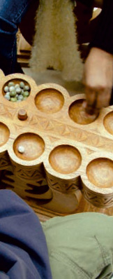

|  |
|
PLAY IT!
Try your hand at mancala, one of Africa’s most popular games, or roll the dice in Tutankhamun’s favourite, Senet, and see if you come out on top.Whether you’re 5 or 105, these timeless games, beautifully carved and decorated, will keep you busy for hours.
To find out more ONLINE visit Children's Compass |